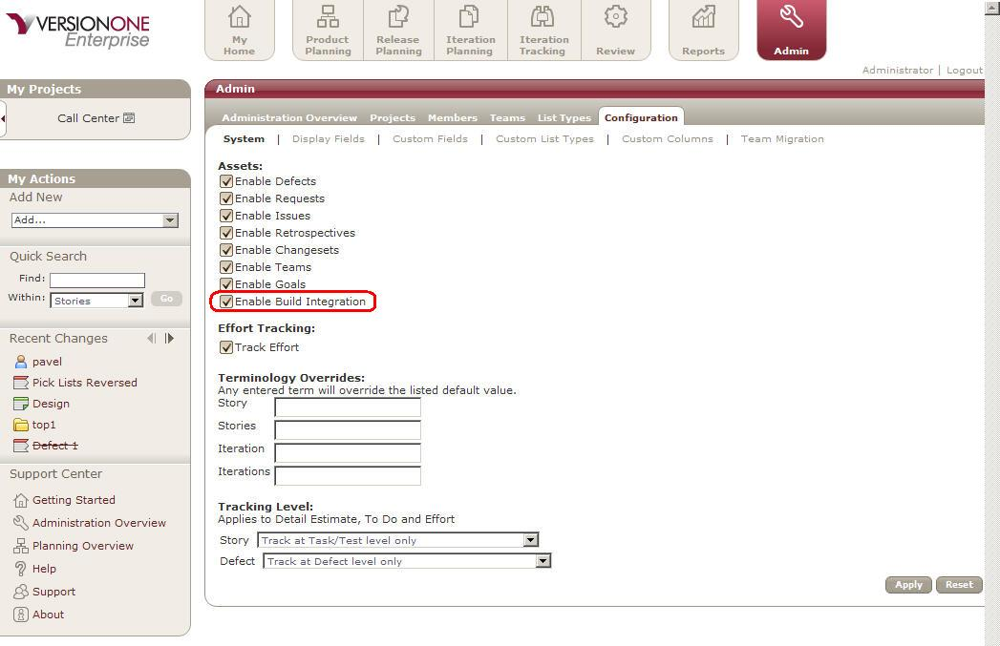
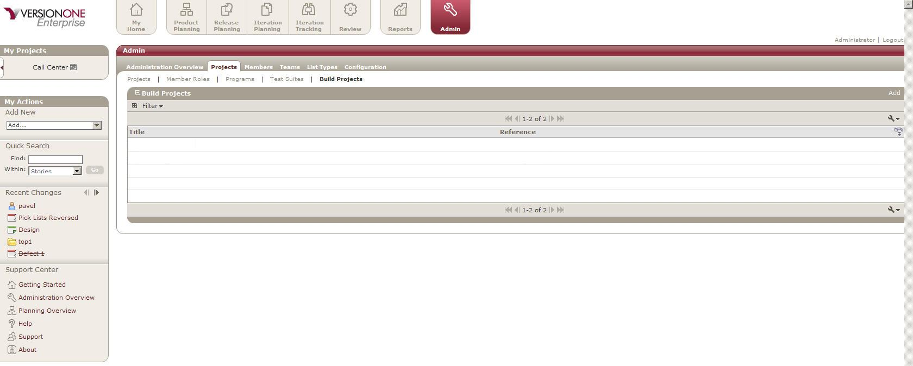
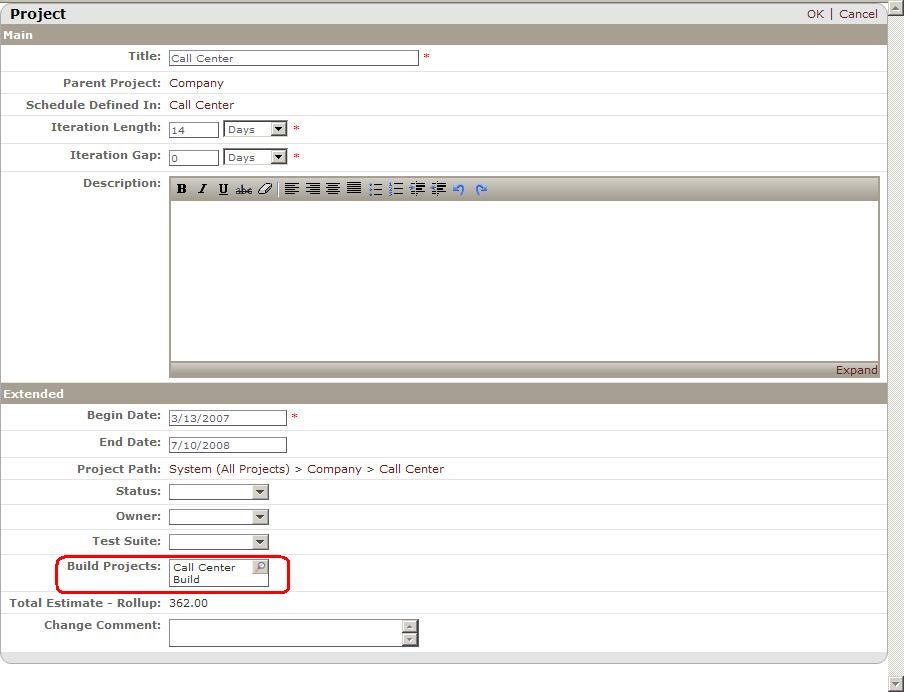
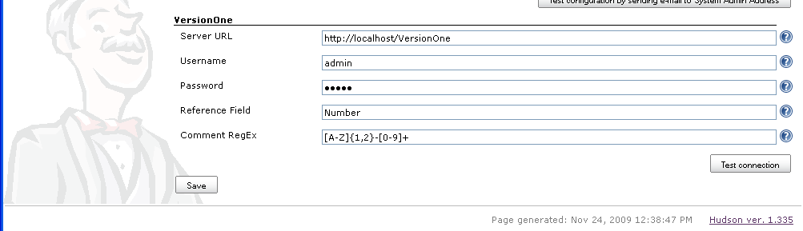

Description
The VersionOne Hudson integration creates a record of Hudson builds in VersionOne, so the development teams can associate stories and defects to a particular build. This visibility is useful when identifying problem builds or generating release notes.
Once the VersionOne Plugin has been installed, team members include a VersionOne identifier , such as “S-01454” or "TK-01234", in the comments of their SCM commit . Every time a build executes the publisher creates a BuildRun asset in VersionOne with details of the build. The VersionOne BuildRun is visible on the 'Relationship' tab of the Story/Defect Details page.
Using this integration you can better answer the following questions:
- Defects
- Which build the defect was reported against?
- Which build contained the fix for the defect?
- Which builds contain work for the defect?
- For Stories (Backlog Item)
- Which builds contain work for the story?
- Which build contained the completed story?
- For Build Runs
- Which defects were fixed?
- Which stories were completed?
- Which defects were introduced?
- When work for a story or defect was included?
- Which Change-sets were included?
- For a range of Build Runs
- Which stories were completed?
- Which defects were fixed?
- Which defects were introduced?
System Requirements
VersionOne: 8.1 or above
Integration Server:
- Operating System---Windows 2000, 2003
Continous Integration Server:
- Tested with Hudson version 1.335
Downloads
The latest version of V1Publisher is available at V1: Integration Downloads
Installation
These instructions presume that Hudson is already installed, configured, and working properly.
Ensure Connectivity
Verify that you can connect to your VersionOne instance from the machine hosting Hudson
Extract Files
Download VersionOne plugin from the link above and extract it into a folder of your choice. This can be a temporary location since we will copy some of these files during Hudson configuration.
Configure
Verify the installation
Once configuration is complete use the following steps to verify that the build integration is working
- Navigate to your Hudson instance
- Force a build on the project you configured
- Wait for build to complete
- Navigate to your VersionOne instance
- Login
- Select VersionOne project in 'My Projects' dropdown
- Navigate to the Reports | Reports Overview page
- Select the "Build Run Quicklist" Report
Configuration
Configure VersionOne
- Log into the VersionOne application as admin
- Navigate to the Admin | Configuration | System page.
- Check the “Enable Build Integration” checkbox and click the Apply button.
 - Navigate to the Admin | Projects | Build Project page
 - Click Add to add a new Build Project
- Specify the following
- Name – this is how the Build Project will be known to VersionOne users
- Reference – this is how the Build Project is known to Cruise Control
- Click Ok to save the new Build Project
- Navigate to the Admin | Projects | Projects page
- Click Edit on the row for the project you want associated with a Build Project
- Using the “Build Projects” dropdown add the appropriate Build Project.
 - Click Ok to accept the changes
- Logout
Configure Hudson
These instructions presume that you are logged into Hudson as an administrator.
- On the Hudson Dashboard, Click "Manage Hudson"
- Click "Manage Plugins"
- Click Advanced
- Under "Upload Plugin" browse to your download location and select the file versionone.hpi

- Click Upload
- Restart your Hudson instance in order to load the new plugin
- On the Hudson Dashboard, Click "Manage Hudson"
- Click Configure System
There is a new VersionOne section at the end of this page - Provide your VersionOne connection parameters

It is recommended that you do not change the "Reference Field" or "Comment RegEx" fields. The "Reference Field" is the system name of the attribute to search when matching the ID in change comments with workitems in VersionOne. The "Comment RegEx" is used to extract workitem identifiers from the change comments. - Test the connection
- Save the settings
- Choose the Job you wish to have published to VersionOne
Remember that this job name must be configured in VersionOne - Click "Configure" to configure the workspace
- In the "Post-build Actions" click the "VersionOne Notifier" checkbox

- Click "Save"